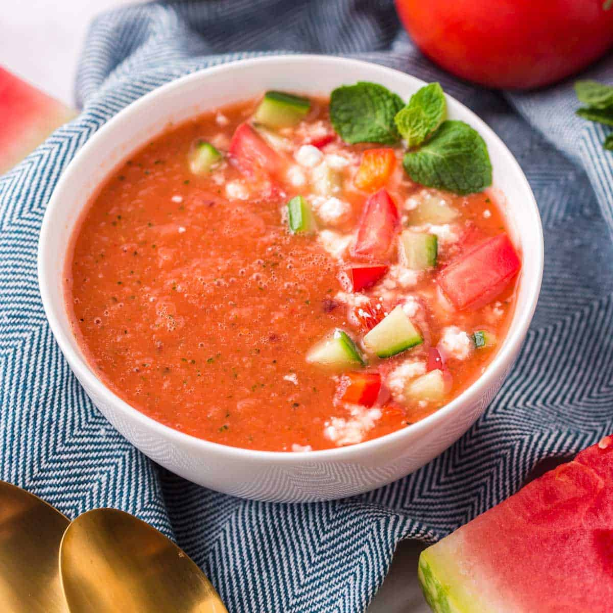

Summer watermelon

This refreshing chilled soup is the perfect way to use up a leftover hunk of watermelon that you might have hanging out in the fridge after last weekend’s picnic. When blended together with lots and lots of summer veggies, a handful of fresh mint, a slice of bread and some simple seasonings, this gazpacho tastes like summertime sunshine in a bowl. And it is delicious!
- Cubed seeded watermelon
- Red bell pepper
- Seeded tomatoes
- Minced shallot
- Fresh lime juice
- Apple cider vinegar
- Combine watermelon, tomatoes, red pepper, cucumber, shallot, lime juice, vinegar, salt, and pepper in a high-powered blender. Blend until smooth, 20 to 30 seconds. Refrigirate for at least 1 hour to allow flavours to meld and soup to chill.
- Stir gazpacho before serving, as it has a tendency to separate, and divide between 4 bowls. Top with feta cheese and cilantro.